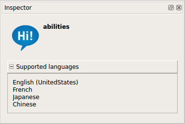

Robot applications panel¶
What is the Robot applications panel¶
The Robot applications panel displays the Applications available on the connected robot.
It allows you to:
- Start, stop or remove Behaviors and Application installed on the connected robot,
- Package and install the current Behavior as an Application on the connected Robot,
- Set a default Behaviors.
{kind=link}
The table below describes the main parts of the Robot applications panel:
| Part | Name | Allows you to ... |
|---|---|---|
| A | Toolbar | Manage Applications and Behaviors currently on the connected robot. |
| B | Application list | Know which Applications are currently installed on the robot. |
| C | Default flag | Know which Behaviors are set as Default Behaviors. |
| D | Execution status | Play/Stop installed Behavior or Application. |
Application list¶
Appearing by default, the .lastUploadedChoregrapheBehavior is an application,
containing the Behavior temporarily installed on the robot last time you
have clicked the  Play button.
Play button.
{kind=link}
| Part | Name | Description |
|---|---|---|
| A | Icon | Icon of the Application. |
| B | Application name | When several languages are available, the name is displayed using:
When the application has more than one behavior, the number of behaviors is written next to the application name. |
| C | ID | ID (Identifier) of the Application. |
| D | Expand/collapse button | Allows expanding the list of Behaviors. Only visible when an Application contains several Behaviors. |
| E | Behavior name | For one Application, one line for each Behavior embedded in this Application shows the Application‘s ID concatenated with the Behavior‘s path. This is the behavior’s identifier, allowing you to start and stop it from other Behaviors in the same application. |
Toolbar¶
| Button | Click on this button to ... |
|---|---|

|
Install the current opened project as an Application on your robot. |
Remove the Applications selected in the list below. If a Behavior is selected, this will remove the Application which contains this Behavior. |
|
Set as default the selected Behaviors. Note A default Behavior is a Behavior automatically executed at robot startup. |
|
Stop all Behaviors that are currently running on the robot. It is useful if you have executed a Behavior at startup for example and you do not have control over it. |
Inspecting an Application¶
With the Inspector panel, you can easily inspect any specific application in the inspector.
The inspector has currently four different views for that purpose:
| Item selected | You see information about | Screenshot |
|---|---|---|
| Application |
|
|
| Behavior |
|
|
| Service |
|
|
| Dialog |
|
 |
Default Behaviors¶
The Default Behaviors are played automatically at robot startup.
The flag near an Application or a Behavior means the associated Behavior is set as Default Behavior.
Warning
Default Behavior & Autonomous Life
A Behavior set as default won’t be focused by the Autonomous Life because it will start before the Autonomous Life. So, if you wanted that an interactive Behavior to be focus by the life, don’t make it default.
Several Default Behaviors
You can play and set as default several Behaviors simultaneously. But the Behaviors need to be compatible.
For example a Behavior making NAO sit down and another making him walk are not compatible. Please set the resources of your boxes to avoid conflicts between simultaneous Behaviors (see How to set resources of a box).
Execution status¶
| Button | Means that the behavior is ... | Click on this button to ... |
|---|---|---|
| not running | Play the Behavior | |
| loading | ||
| running | Stop the Behavior | |
| unloading |